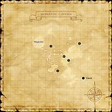

Description
Monastic Cavern is a dungeon in Norvallen.
Map

Involved in Quests / Missions
| Quest / Mission | Type | Starter | Location |
|---|---|---|---|
| An Understanding Overlord? | General | Loo Kohor | Monastic Cavern |
| Borghertz's Chasing Hands | RNG AF | Guslam | Upper Jeuno (pos=H-8) |
| Borghertz's Shadowy Hands | DRK AF | Guslam | Upper Jeuno (pos=H-8) |
| Borghertz's Sneaky Hands | AF (THF) | Guslam | Upper Jeuno (pos=H-8) |
| Borghertz's Sorcerous Hands | AF (BLM Body) | Guslam | Upper Jeuno (pos=H-8) |
| Deal with Tenshodo | General | Garnev | Lower Jeuno (pos=J-7) |
| The Circle of Time | AF (BRD) | Imasuke | Port Jeuno (pos=E-6) |
| Whence Blows the Wind | Genkai: 3 | Maat | Ru'Lude Gardens |
NPCs
| Name | Location | Type |
|---|---|---|
| Loo Kohor | — | Quest NPC |
Notorious Monsters
Regular Monsters
Event Monsters
| Name | Level | Drops | Steal | Family | Spawns | Notes |
|---|---|---|---|---|---|---|
| Bugaboo | 63 | — | — |  GhostsImage source GhostsImage source | 1 | Spawned Quest: The Circle of Time; A, H, HP |
| Chillgaze Foddrud | — | — | — |  OrcsImage source OrcsImage source | 1 | Spawned Quest: An Understanding Overlord?; A, L |
| Grimbolt Onkzok | — | — | — | OrcsImage source | 1 | Spawned Quest: An Understanding Overlord?; A, L |
 MimicImage source MimicImage source | — | — | — | Mimics | 1 | Failed coffer pick; A, L |
| Rictusgrin Prakpok | — | — | — | OrcsImage source | 1 | Spawned Quest: An Understanding Overlord?; A, L |
| Sevenskewer Krugglug | — | — | — | OrcsImage source | 1 | Spawned Quest: An Understanding Overlord?; A, L |
| Shatterskull Mippdapp | — | — | — | OrcsImage source | 1 | Spawned Quest: An Understanding Overlord?; A, L |
| Siegebreaker Wujroj | — | — | — | OrcsImage source | 1 | Spawned Quest: An Understanding Overlord?; A, L |
Story walkthroughs in this area
| Story | Mission / quest |
|---|---|
| WotG W-10 | Howl from the Heavens |
References
External references describe their own server or retail rules. Documented Zenith changes take precedence.
Map credits: Map 1 — HorizonXI Wiki. Original game maps © SQUARE ENIX; redrawn maps retain the credited authorship and license.

Additional level-75 reference


Deep within the recesses of the Orcish stronghold of Davoi is the Monastic Cavern, home to the leaders of the Orcs. The old peaceful Elvaan monastery, which used to welcome travelers from far and wide, is now dangerous for any and all adventurers to even step foot in.
Connecting Areas
If you see a quest that is listed as Yes but is not working properly please report it on GitHub. Make sure to list as many details as possible when describing what is not working. If there happens to already be a report on that quest regarding your problem, just add your experience to that report.
Legend
Yes = Quest is in game and working
Yes but bugged = Quest is in game but not working properly and being worked on or in que to be worked on.
No = Not in game yet but is planned
Involved in Quests/Missions
| Quest | Type | Starter | Location | Available? |
|---|---|---|---|---|
| An Understanding Overlord? | General | Loo Kohor | Monastic Cavern | No |
| The Circle of Time | AF (BRD) | Imasuke | Port Jeuno (E-6) | Yes |
| Borghertz's Sneaky Hands | AF (THF) | Guslam | Upper Jeuno (H-8) | Yes |
| Hunter's Jerkin* | AF (RNG) | Guslam | Upper Jeuno (H-8) | Yes |
| Chaos Flanchard* | AF (DRK) | Guslam | Upper Jeuno (H-8) | Yes |
| Wizard's Coat* | AF (BLM) | Guslam | Upper Jeuno (H-8) | Yes |
Coffer/Chest Contents
|
NPCs Found Here
Weather
| |||||||||||||||||
Notorious Monsters Found Here
|
Name |
Level |
Drops |
Steal |
Family |
Spawns |
Notes | |||||||
| Bugaboo | 63 - 63 | Ghost | |||||||||||
| Chillgaze Foddrud | Unknown | Orc | |||||||||||
| Grimbolt Onkzok | Unknown | Orc | |||||||||||
| Mimic | Unknown | Mimic | |||||||||||
| Orcish Hexspinner | 72 - 74 | Orc | 1 | ||||||||||
| Orcish Overlord | 75 - 75 | Orc | 1 | ||||||||||
| Orcish Warlord | 72 - 74 | Orc | 1 | ||||||||||
| Overlord Bakgodek | 85 - 85 | Orc | 1 | ||||||||||
| Rictusgrin Prakpok | Unknown | Orc | |||||||||||
| Sevenskewer Krugglug | Unknown | Orc | |||||||||||
| Shatterskull Mippdapp | Unknown | Orc | |||||||||||
| Siegebreaker Wujroj | Unknown | Orc | |||||||||||
|
HP = Detects Low HP; M = Detects Magic; Sc = Follows by Scent; T(S) = True-sight; T(H) = True-hearing JA = Detects job abilities; WS = Detects weaponskills; Z(D) = Asleep in Daytime; Z(N) = Asleep at Nighttime | |||||||||||||
Mobs Found Here
|
Name |
Level |
Drops |
Steal |
Family |
Spawns |
Notes | |||||||
| Orcish Bowshooter | 42 - 46 | Orc |
8 |
A, L, S, Sc | |||||||||
| Orcish Champion | 69 - 72 | Orc |
16 |
A, L, S, Sc | |||||||||
| Orcish Dragoon | 69 - 72 | Orc |
15 |
A, L, S, Sc | |||||||||
| Orcish Dreadnought | 69 - 72 | Orc |
18 |
A, L, S, Sc | |||||||||
| Orcish Farkiller | 69 - 71 | Orc |
17 |
A, L, S, Sc | |||||||||
| Orcish Footsoldier | 43 - 49 | Orc |
8 |
A, L, S, Sc | |||||||||
| Orcish Gladiator | 44 - 49 | Orc |
8 |
A, L, S, Sc | |||||||||
| Orcish Predator | 53 - 57 | Orc |
20 |
A, L, S, Sc | |||||||||
| Orcish Protector | 70 - 72 | Orc |
4 |
A, L, S, Sc | |||||||||
| Orcish Trooper | 45 - 49 | Orc |
8 |
A, L, S, Sc | |||||||||
| Orcish Veteran | 52 - 56 | Orc |
20 |
A, L, S, Sc | |||||||||
| Orcish Warchief | 55 - 59 | Orc |
20 |
A, L, S, Sc | |||||||||
| Orcish Zerker | 54 - 58 | Orc |
20 |
A, L, S, Sc | |||||||||
|
HP = Detects Low HP; M = Detects Magic; Sc = Follows by Scent; T(S) = True-sight; T(H) = True-hearing JA = Detects job abilities; WS = Detects weaponskills; Z(D) = Asleep in Daytime; Z(N) = Asleep at Nighttime | |||||||||||||
Adapted from Eden Wiki: Monastic Cavern · Contributors and history · CC BY-SA 4.0. Revision 45534. Layout, links and optional background text adapted for Zenith.